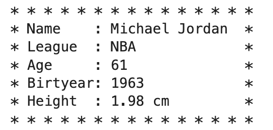
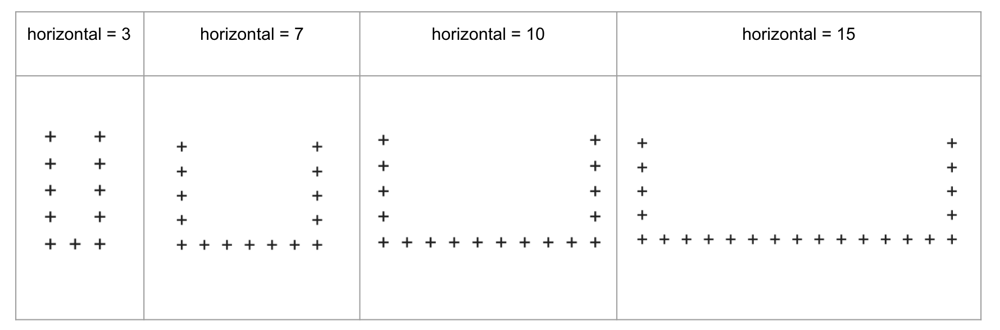
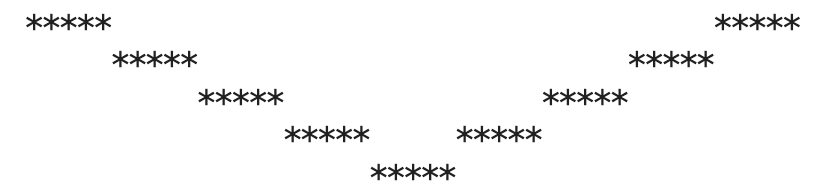
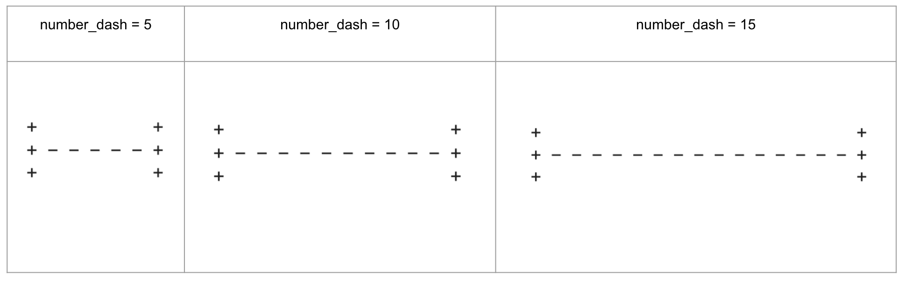

Variables Exercises and Solutions#
Warm Up Question#
Define a variable called quantity and assign it the value 25. Display its ID number and type.
quantity = 25
print(id(quantity))
print(type(quantity))
4348752560
<class 'int'>
Warm Up Question#
Which of the following cannot be used as a variable name, and why?
_name1playerplayer_namebirth yearTrue
Variable names cannot start with a number.
Variable names cannot contain space.
Variable names cannot be reserved keywords.
Warm Up Question#
Determine the output of the code below and provide an explanation.
x = 5
print(x)
x = 7
print(x)
x = 5
print(x)
x = 7
print(x)
5
7
Warm Up Question#
Use the provided variables and print() function to output the statement:
Harry is 23 years old.
name, age = 'Harry', 23
name, age = 'Harry', 23
print(name, 'is', age, 'years old.')
Harry is 23 years old.
Warm Up Question#
Use the given variables and string concatenation to display 35.
x, y = 3, 5
x, y = 3, 5
print(str(x)+str(y))
35
Question-1: Name Tag#
Use the following information to create the variables name, league, age, and height with the given values.
Create the birthyear variable using the age variable.
Design a name tag.
There is a space between each asterisk in the first and last lines.
Michael Jordan played basketball in the NBA. In 2024, he is 61 years old, and his height is 1.98 meters.
Sample Output:

name = 'Michael Jordan'
league = 'NBA'
age = 61
height = 1.98
print('* * * * * * * * * * * * * * *')
print('* Name :', name, '*')
print('* League :', league, ' *')
print('* Age :', age, ' *')
print('* Birthyear:', 2024-age, ' *')
print('* Height :', height, 'm' , ' *')
print('* * * * * * * * * * * * * * *')
* * * * * * * * * * * * * * *
* Name : Michael Jordan *
* League : NBA *
* Age : 61 *
* Birthyear: 1963 *
* Height : 1.98 m *
* * * * * * * * * * * * * * *
Question-2: Repeating Digits#
By using the variables \(x\) and \(y\) given below, print 353535 using 4 different pieces of code.
x, y = 3, 5
Solution
print((str(x)+str(y))*3)
print(str(x)+str(y)+str(x)+str(y)+str(x)+str(y))
print((10*x+y)*10101)
print(x*101_010+y*10_101)
353535
353535
353535
353535
Question-3: Sentence Builder#
Print the statement I went to Italy in 2015. using the country and year variables below.
country = 'Italy'
year = 2015
Warning: There is no space before the period.
Solution
country = 'Italy'
year = 2015
print('I went to '+ country +' in '+ str(year)+ '.')
I went to Italy in 2015.
Question-4: Circle#
Create a variable named r and assign the value of \(5\) to it.
Print the area and perimeter of the circle with a radius equal to
r.Round them to the nearest hundredth.
Hint:
Perimeter = \(2\pi r\), Area = \(\pi r^2\)
Import \(\pi\) from a module.
Output:
Perimeter: 31.42
Area : 78.54
Solution
import math
r = 5
perimeter = 2*math.pi*r
area = math.pi * (r**2)
print('Perimeter:', round(perimeter,2))
print('Area :', round(area,2))
Perimeter: 31.42
Area : 78.54
Question-5: U-Shape#
Print the letter U using the character + and the variable horizontal.
horizontal = 3
The vertical left and right parts of U have five
+characters each.The variable horizontal represents the number of
+characters with one space between them in the bottom horizontal part.
Examples 
Solution
print('+' + ' '*(2*horizontal-3) + '+')
print('+' + ' '*(2*horizontal-3) + '+')
print('+' + ' '*(2*horizontal-3) + '+')
print('+' + ' '*(2*horizontal-3) + '+')
print('+ ' *horizontal)
---------------------------------------------------------------------------
NameError Traceback (most recent call last)
Cell In[10], line 1
----> 1 print('+' + ' '*(2*horizontal-3) + '+')
2 print('+' + ' '*(2*horizontal-3) + '+')
3 print('+' + ' '*(2*horizontal-3) + '+')
NameError: name 'horizontal' is not defined
Question-6: V-Shape#
Print the following using the character *, spaces and the variable n=5.

Solution
n = 5
print(' '*n*0 + '*'*n + ' '*n*(4*2-1) + '*'*n )
print(' '*n*1 + '*'*n + ' '*n*(3*2-1) + '*'*n )
print(' '*n*2 + '*'*n + ' '*n*(2*2-1) + '*'*n )
print(' '*n*3 + '*'*n + ' '*n*(1*2-1) + '*'*n )
print(' '*n*4 + '*'*n )
***** *****
***** *****
***** *****
***** *****
*****
Question-7: H-Shape#
Print the following ‘H’ shapes using the characters ‘+’, ‘ ‘, and ‘-‘.
The number of ‘-’ characters in the middle line is represented by the variable ‘number_dash’.
number_dash = 5
Examples 
Solution
number = 15
print('+ ' + ' '*(2*number) +'+')
print('+ ' + '- '*number +'+')
print('+ ' + ' '*(2*number) +'+')
+ +
+ - - - - - - - - - - - - - - - +
+ +
Question-8: Receipt Generator#
The following code generates a basic store receipt. Improve its appereance by adding separators (dashes -) and formatting the price, tax, tip, and discount details to make it look more professional, similar to real receipts.
from datetime import datetime
current_date_time = datetime.now().strftime('%Y-%m-%d %H:%M:%S') # string object
restaurant_name = 'Olive Garden'
price = 100
tax = 0.08
tip = 0.15
discount = 7
tax_amount = tax*price
tip_amount = tip*price
total = price + tax_amount + tip_amount - discount
print(restaurant_name)
print(current_date_time)
print('Total :', total)
from datetime import datetime
restaurant_name = 'Olive Garden'
price = 100
tax = 0.08
tip = 0.15
discount = 7
tax_amount = tax*price
tip_amount = tip*price
total = price + tax_amount + tip_amount - discount
print('-'*30)
print(' '*8, restaurant_name)
print('-'*30)
print(' '*4, datetime.now().strftime('%Y-%m-%d %H:%M:%S'))
print('-'*30)
print('Price : $', price, sep='')
print('Tax : $', tax_amount, sep='')
print('Tip : $', tip_amount, sep='')
print('Discount: -$', discount, sep='')
print('-'*30)
print('Total : $', total, sep='')
print('-'*30)
------------------------------
Olive Garden
------------------------------
2025-02-11 17:24:14
------------------------------
Price : $100
Tax : $8.0
Tip : $15.0
Discount: -$7
------------------------------
Total : $116.0
------------------------------
Question-9: Dynamic Arrow#
Define a variable called num_dashes and set it equal to 5.
Using this variable, generate an arrow that consists of:
num_dashes number of dashes (-)
followed by a greater than sign (>)
Print the arrow.
Example Output (when num_dashes = 5): —–>
# Step 1: Define the variable
num_dashes = 5
# Step 2: Create the arrow
arrow = "-" * num_dashes + ">"
# Step 3: Print the result
print(arrow)
----->
Question-10: Print Variables#
Define the following variables with appropriate values and print them in one sentence:
first_name
last_name
age
state
Example output format: My name is Michael Bird. I am 45 years old and live in New York.
# Define variables
first_name = 'Michael'
last_name = 'Bird'
age = 45
state = 'New York'
# Print in one sentence
print('My name is ' + first_name + ' ' + last_name +
'. I am ' + str(age) + ' years old and live in ' + state + '.')
My name is Michael Bird. I am 45 years old and live in New York.
Question-11: Temperature Conversion#
Define a variable called celsius and set it to 25.
Convert it to Fahrenheit using the formula:
\(\displaystyle F = \frac{9}{5}C+32\)
Print the result
Example output format: 25 C = 77.0 F
# Define variable
celsius = 25
# Convert to Fahrenheit
fahrenheit = (9/5) * celsius + 32
# Print result
print(str(celsius) + ' C = ' + str(fahrenheit) + ' F')
25 C = 77.0 F
Question-12: Symbol Square#
Define a variable symbol and set it to ‘*’.
Define a variable count and set it to 7.
Print a square of size count × count using the symbol variable.
Hint: Use \n to create new lines.
# Define variables
symbol = '* '
count = 7
# Create the square
square = (symbol * count + '\n') * count
# Print the square
print(square)
* * * * * * *
* * * * * * *
* * * * * * *
* * * * * * *
* * * * * * *
* * * * * * *
* * * * * * *
Question-13: Swap Digits#
Define a variable called number and assign it any two-digit integer (e.g., 47).
Swap the tens and ones digits of the number.
Store the result in a new variable called swapped_number.
Print the original number and the swapped number in a clear sentence.
Example Output:
Original number: 47
Swapped number: 74
Hint:
To extract the tens digit: tens = number // 10
To extract the ones digit: ones = number % 10
To combine them in swapped order: swapped_number = ones * 10 + tens
# Define a two-digit number
number = 47
# Extract tens and ones digits
tens = number // 10
ones = number % 10
# Swap the digits
swapped_number = ones * 10 + tens
# Print the result
print('Original number: ' + str(number))
print('Swapped number: ' + str(swapped_number))
Original number: 47
Swapped number: 74
Question-14: String Operations#
Define three variables: first, middle, and last.
Generate an email in the format: first.middle.last@nba.com
All lowercase (use the lower() method of strings)
Replace spaces with underscores (use the replace method of strings)
Display the results as:
Full Name: Michael Patrick Smith
# Define variables
first = 'Michael'
middle = 'Patrick'
last = 'Smith'
# Combine full name
full_name = first + ' ' + middle + ' ' + last
# Generate email
email = (first + '.' + middle + '.' + last).lower().replace(' ', '_') + '@nba.com'
# Display results
print('Full Name: ' + full_name)
print('Email: ' + email)
Full Name: Michael Patrick Smith
Email: michael.patrick.smith@nba.com
Business Applications#
Question: Demand Function#
The demand, p = D(q), function shows how much of a product consumers want (q=quantity) and the price (p)they are willing to pay.
The demand function is given as the following linear relation: \(p = -2q+300\)
Determine the price if the number of items demanded is 75.
Use the variables \(q\) and \(p\).
q = 75
p = -2*q+300
print(p)
150
Question: Demand Equation#
A store can sell 1200 ice creams at 3 dollars each. If the price is 5 dollars, they can sell 800 ice creams.
What will be the price if 500 ice creams are sold, assuming the demand is linear?
Hint:
Since the relation between
pandqis linear, we have \(p=mq+b\)The slope \(m\) is calculated using the formula \(\displaystyle m=\frac{p_2-p_1}{q_2-q_1}\) for given two points \((q_1,p_1)\) and \((q_2,p_2)\).
The y-intercept \(b\) can be found using one of the points \((q_1,p_1)\) or \((q_2,p_2)\) so \(b=p_1 - mq_1\) or \(b=p_2 - mq_2\)
Use the variables \(q_1, p_1, q_2, p_2\) for the given values in the question.
# p stands for price and q stands for quantity
q1, p1 = 1200, 3
q2, p2 = 800, 5
# p = mq +b
# m is the slope
m = (p2-p1)/(q2-q1)
m
-0.005
# b is y-intercept
b = p1 - m*q1
b
9.0
# p = -0.005q+9
# q = 500, p = ?
q = 500
p = m*q+b
p
6.5
Question: Supply Function#
The supply function, \(p=S(q)\), shows how the price (p) affects the quantity (q) that producers want to supply.
The supply function is given by the linear relation \(p = 4q+100\).
Determine the price when 120 items are supplied.
Use the variables \(q\) and \(p\).
q = 120
p = 4*q+100
print(p)
580
Question: Supply Equation#
A store can supply 2000 ice creams at 4 dollars each. If the price is 6 dollars, they can supply 6000 ice creams.
How many ice creams can they supply at 5 dollars, assuming the supply is linear?
Hint:
Since the relation between \(p\) and \(q\) is linear, we have \(p=mq+b\)
The slope \(m\) is calculated using the formula \(\displaystyle m=\frac{p_2-p_1}{q_2-q_1}\) for given two points \((q_1,p_1)\) and \((q_2,p_2)\).
The y-intercept \(b\) can be found using one of the points \((q_1,p_1)\) or \((q_2,p_2)\) so \(b=p_1 - mq_1\) or \(b=p_2 - mq_2\)
Use the variables \(q_1, p_1, q_2, p_2\) for the given values in the question.
q1, p1 = 2000, 4
q2, p2 = 6000, 6
# p = mq +b
# m is the slope
m = (p2-p1)/(q2-q1)
m
# b is y-intercept
b = p1 - m*q1
b
# p = -0.0005q+3
# q = ?, p = 5
# q = (p-3)/0.0005
p = 5
q = (p-b)/m
q
Question: Simple Interest#
Simple Interest Formulas: \(\displaystyle I=P r t\) and \(A = P + I\) where
A is the final amount
I is the interest amount
P is the initial (principal) amount
r is the annual interest rate (decimal form)
t is the number of years
You borrow 1,200 dollars for 8 months at a 24% annual simple interest rate.
How much interest will you pay?
What is the total amount you will repay after 8 months?
Hint:
Use the variables \(P, r, t\) for the given values.
Calculate the values of the variables \(I\) and \(A\).
t is 8/12 years.
Output:
a) I = 192.0
b) A = 1392.0
P = 1200
r = 0.24
t = 8/12
I = P*r*t
A = P + I
print('a) I =',I)
print('b) A =',A)
Question: Compound Interest#
Compund interest formula: \(\displaystyle A=P\left(1+{\frac {r}{n}}\right)^{nt}\) where
A is the final amount
P is the initial (principal) amount
r is the annual interest rate (decimal form)
n is the compounding frequency (anual: n=1, semi annual: r=2, quarter: r=4, monthly: r=12)
t is the number of years
If you deposit 800 dollars into a savings account with a 2.75 percent interest rate compounded monthly, what will be your balance after five years (Round your answer to the nearest hundredth)?
Hint:
Use the variables \(P, r, n, t\) for the given values.
Calculate the value of the variable \(A\).
P, r, n, t = 800, 0.0275, 12, 5
A = P*(1+r/n)**(n*t)
print('A=', round(A,2))
Question: Continuous Compound Interest#
Continuous Compound Interest formula: \(\displaystyle A=Pe^{rt}\) where
A is the final amount
P is the initial (principal) amount
r is the annual interest rate (decimal form)
t is the number of years
If you deposit 500 dollars into a savings account with a 5.25 percent interest rate compounded continuously, what will be your balance after ten years (Round your answer to the nearest hundredth)?
Hint:
Use the variables \(P, r, t\) for the given values.
Calculate the value of the variable \(A\).
import the number e from the math module.
import math
P, r, t = 500, 0.0525, 10
A = P*math.e**(r*t)
print('A=', round(A,2))